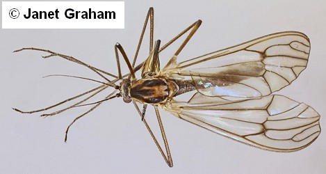

Key to families of Culicoidea
1.
- Scales present on wing veins, on the head and legs and usually on the other parts of body.
Proboscis long and thin, longer than head and thorax combined (extending well beyond clypeus).

Culicidae
- Scales absent from wing veins and other parts of body, though conspicuous hairs frequently present. Proboscis short,
barely extending beyond clypeus.

2
- Vein R2+3 strongly arched, not in the line with Rs. Wing veins with very short,
relatively sparse, inconspicuous hairs. Antenna with relative short sparse indistinctly arranged hairs.


Dixidae
- Vein R2+3 not arched, more or less in line with Rs. Wing veins with long dense conspicuous hairs. Antenna with abundant long hairs in distinct whorls.


3
- Vein R1 terminating in costa near wing apex, nearer to R2 than to Sc.
Chaoboridae
- Vein R1 terminating in costa nearer to Sc than to R2.

Corethrellidae